This part aims to describe the Mobile Widget SDK Plug-in. This plug-in, once integrated in the Eclipse platform, provides tools for Mobile Widgets creation, compilation, export and emulation.
The following points will be detailed:
Before you install the plug-in, make sure that your development environment fits the following requirements:
There are two ways to create a new Mobile Widget Project:
Click on the New Widget Project icon on the Toolbar (marked in red):
Go to File > New > Project in the top menu bar. In the wizards list,
go into the Mobile Widgets SDK folder and select Widget Project, then click on Next.
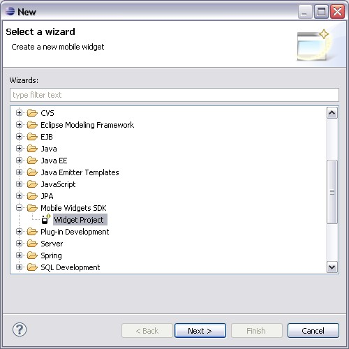
The new project wizard page is then displayed:

The Widget Type is defined here. As indicated on the wizard page:
First of all, the global parameters fields have to be filled in. Here is a short description of these parameters:
The new Widget Project is built from an existing VRML model. These models are
functional and provide sample code. The VRML model to use is selected on the
second page of the wizard. A short description and a screenshot of the selected
item are displayed on the right.
When a model is selected, the Widget project creation is completed. You can
click on the Finish button.

A complete Widget Project is created. It is fully functional, and can be run once created by using Run As > Mobile Widget. Its sources can be used as a starting point for another application, or just to provide code samples.
The third page of the creation wizard is optional.
The widget styles provide different pictures and allow the developer to
customize the widget design. By default, the style of the new widget will be the
style of the selected VRML model. However, this can be modified in this page.
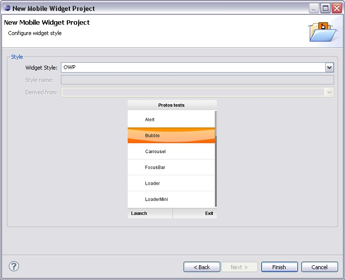
An existing style can be used, or a new style can be created. A new style can be derived from an existing style. A screenshot is displayed on this page, allowing the developer to see how the selected style will look like.
A newly created project has the following structure:
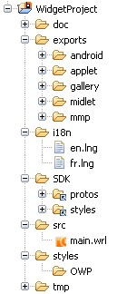
Sometimes, a README.txt file is present. It contains a description of the model as well as information that can be useful.
Depending on the selected widget type, the project icon in the Eclipse workspace
is different: orange if it is a Mobile Widget, cyan if it is a Tiny Mobile Widget.
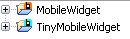
In the top menu, go into Window > Preferences... and select Mobile Widgets. In this Preferences Page, you can configure the Perl path, and the signing of Applets and MIDlets.
In order to generate the widgets' documentation, you must provide the path where Perl is installed. Specify the path in the Perl bin directory field. By default, it is set to C:\Perl\bin.
In order to sign Applets and MIDlets, you must provide a keystore and other
data, as an alias, a storepass and a keypass. If the checkbox is checked and
correct data are entered in the different fields, the Applets and/or the MIDlets
will automatically be signed when created.
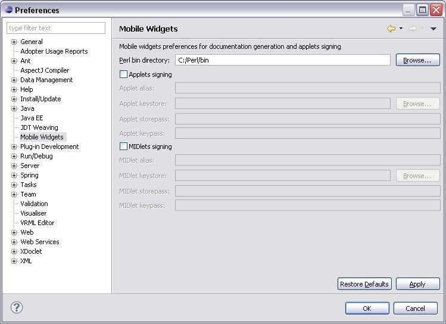
The project preferences page allows modifying the Widget version and the Widget
style after the project creation.
Right click on the Widget project and select Properties, then select Widget
preferences.

The version and the style of the selected project are displayed, and can be modified. When the OK button is pressed, the modification are submitted and taken in account by the project.
There are three different ways to run the Mobile Widget:
On the top menu, click on Run > Open Run Dialog.... The following window is displayed:
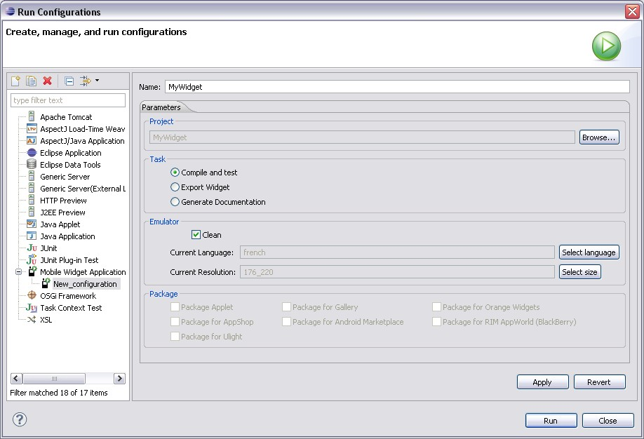
In the configurations list, choose Mobile Widget Application. You can specify a name for this configuration, in the Name field. By default, it will be named New_configuration. Select a project on which the configuration will be applied by clicking on the Browse… button.
In the Task group, select Compile and test. The Emulator group is enabled. There are three configuration items:
Click on the Apply button to save your configuration, and then on the Run button to launch it. The WRL sources are compiled for the current language and resolution, and the emulator is launched.
The fourth button of the Toolbar allows configuring Run and Export for the selected widget:
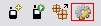
In the Test with Emulator group, you can choose to wipe data by checking the box,
and you can select the language and the resolution used when the emulator is launched:
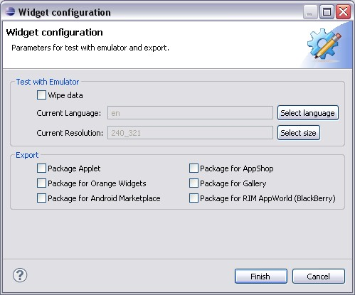
Once the setup is done, click on the Finish button to save it.
This configuration will be used when the second button of the Toolbar is clicked:
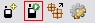
Then, the emulator is launched.
For convenience, a launch shortcut is provided. To access it, right click on a
Mobile Widget or a Tiny Mobile Project or on one of its elements, and select
Run As > Mobile Widget.

This shortcut provides the following configuration:
There are three different ways to export the Mobile Widget:
On the top menu, click on Run > Open Run Dialog... to display the Run Configurations dialog:
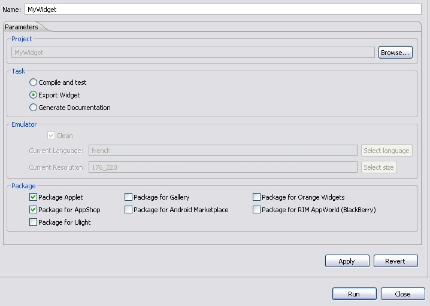
In the Task group, select Export Widget. The Package group is enabled: select one or several packages to create.
Click on the Apply button to save your configuration, and then on the Run button to launch the export task(s).
The Widget Project should contain a screenshot.png file, in a doc/img folder. If
this file does not exist, a warning is displayed when the Package for Gallery
task is selected:

The fourth button of the Toolbar allows configuring Export for the selected widget:
In the Export group, you can choose the packages to generate when the export
task is launched:
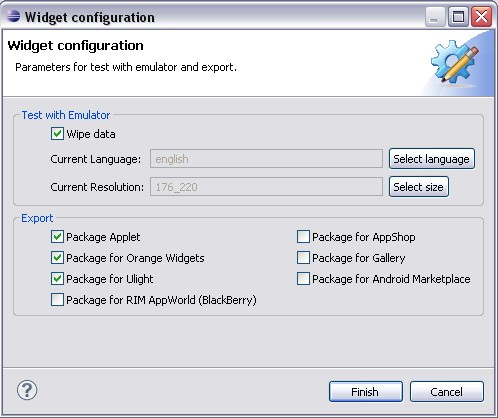
The Package for Ulight option is only available for Tiny Mobile Widgets. For a full description of the different packages, see §6.1. Click on the Finish button to save the configuration.
Once the setup is done, click on the third button of the Toolbar to launch the
selected export tasks:
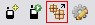
The context menu can be accessed by right-clicking on the project (or on one of
its elements). It allows launching export tasks one by one:
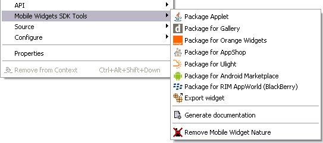
The Package for Ulight option is only available for Tiny Mobile Widgets.
The Export widget option launches the packages tasks selected in the Toolbar
configuration screen.
Documentation in HTML can be generated from the comments present in the VRML code of the widget.
On the top menu, click on Run > Open Run Dialog... to display the Run
Configurations dialog:
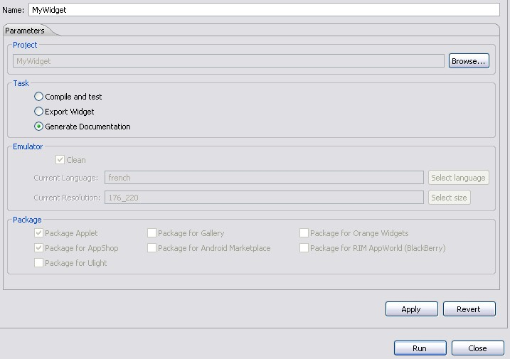
In the Task group, select Generate Documentation, and click on the Run button. The documentation is generated in the doc folder of the project, and open in a web browser.
The context menu can be accessed by right-clicking on the project (or on one of
its elements). Click on the Generate documentation item.
The documentation is generated in the doc folder of the project, and open in a web browser.
A project obtained from repository check-out which contains all the mandatory
elements may not have the required Mobile Widget nature. In this case, the
options of the context menus, the Run Configuration and the Toolbar are not
available for the project. To convert such a project in a Mobile Widget or a
Tiny Mobile Widget project, use the Mobile Widgets SDK Tools:
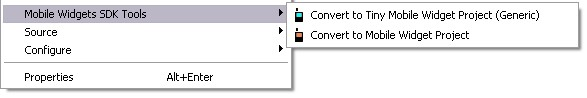
Once the project converted, the related actions become available, and the needed symbolic links are created. The project nature is indicated by the following icon: for Mobile Widget Project, for Tiny Mobile Widget Project.
If you convert a project that should not have been, the nature can always be
removed by using the context menu (last item):

Add these two lines on your Micro Emulator configuration file:
The Micro Emulator configuration file is available here: